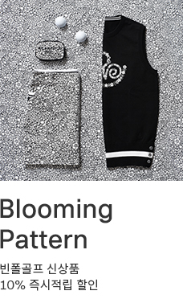
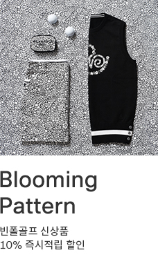

01_속성(property)선택자p.149
속성선택자는 html태그요소에 있는 속성(href,src,alt,type,title.....)을 선택하여 서식을 적용하고자 할 때 사용하는 선택자로서 기본속성, 문자열속성 선택자가 있다.
1. 기본 속성선택자
작성법) 선택자{속성}:사용자가 선택한 요소안에 '속성'이 일치하는 요소선택
선택자[속성=값]:선택한자 요소안에 '속성=값'이 일치하는 요소를 선택한다.
예)
2. 문자열 속성 선택자
속성값안에 있는 문자열값에서 사용자가 찾고자 하는 문자를 선택하여 서식을 적용.
- 선택자[속성|(파이프라인)=값]:특정값이 포함된 속성을 선택
- 선택자[속성^(써컴플렉스)=값]:시작하는 단어가 포함된 속성 선택
- 선택자[속성$(달러사인)=값]:끝나는 단어가 포함된 속성선택
- 선택자[속성*(아스테리스크)=값]:문자열 안에서 해당단어 포함된 속성을 선택
- 선택자[속성~(틸트)=값]:여러 값들 중 특정 '값'이 포함되어 있을 때 선택
실습-이미지 확장자별(jpg,gif,bmp,png)로 테두리 속성을 각각 다르게 넣어서 적용하고, 마우스 오버시 같은 테두리 색상이 나오게 서식을 적용한다


 
